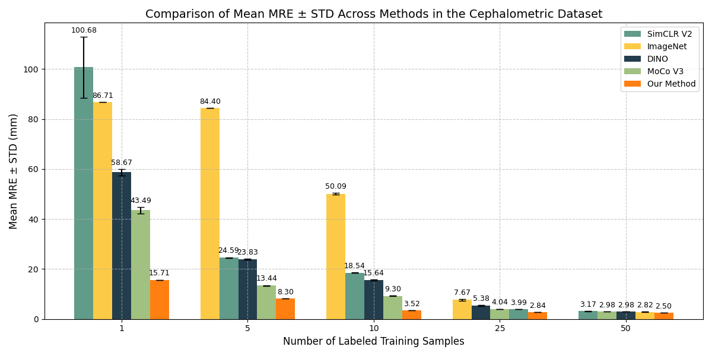
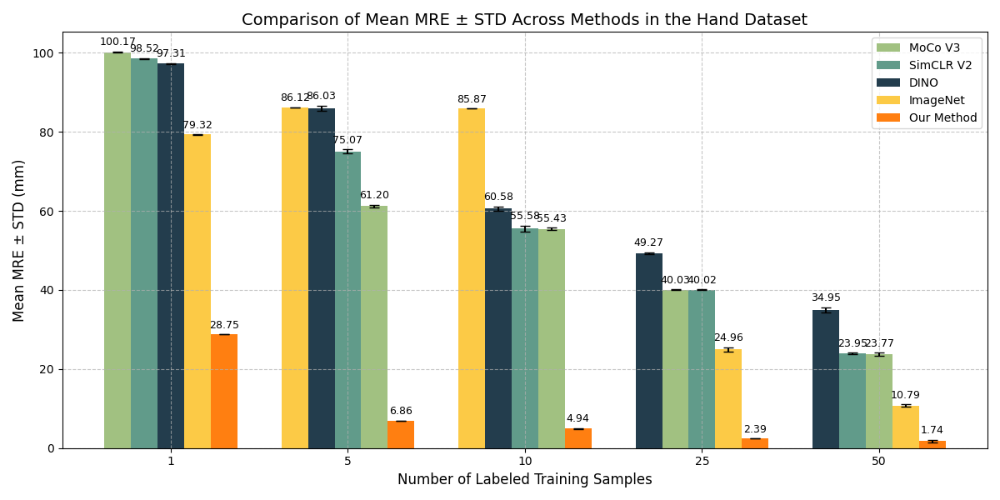

Few-shot Landmark Detection Results
The paper evaluates the effectiveness of DDPM self-supervised pre-training for landmark detection by benchmarking it against supervised ImageNet pre-training, self-supervised state-of-the-art methods (MoCoV3, SimCLRV2, and DINO), and the YOLO framework across three X-ray datasets: Chest, Cephalometric, and Hand. The proposed approach consistently outperforms both ImageNet and alternative SSL methods across all datasets and training image quantities, with particularly impressive results in low-data regimes. For instance, with just one labeled sample in the Chest dataset, DDPM achieves a Mean Radial Error (MRE) of 14.99px compared to ImageNet's 143.67px, representing an 89.6% improvement. Similar significant performance gains are observed in the Cephalometric dataset (15.71mm vs 86.71mm MRE) and Hand dataset (28.75mm vs 79.32mm MRE). When compared to YOLO, a state-of-the-art universal anatomical landmark detection model that uses mixed dataset training, DDPM achieves competitive or superior results using just one labeled sample. These results demonstrate the method's effectiveness in few-shot learning scenarios, which are common in medical imaging where annotated data is scarce.
Chest Few-shot Results
Cephalometric Few-shot Results
Hand Few-shot Results
Comparison with the state-of-the-art YOLO framework